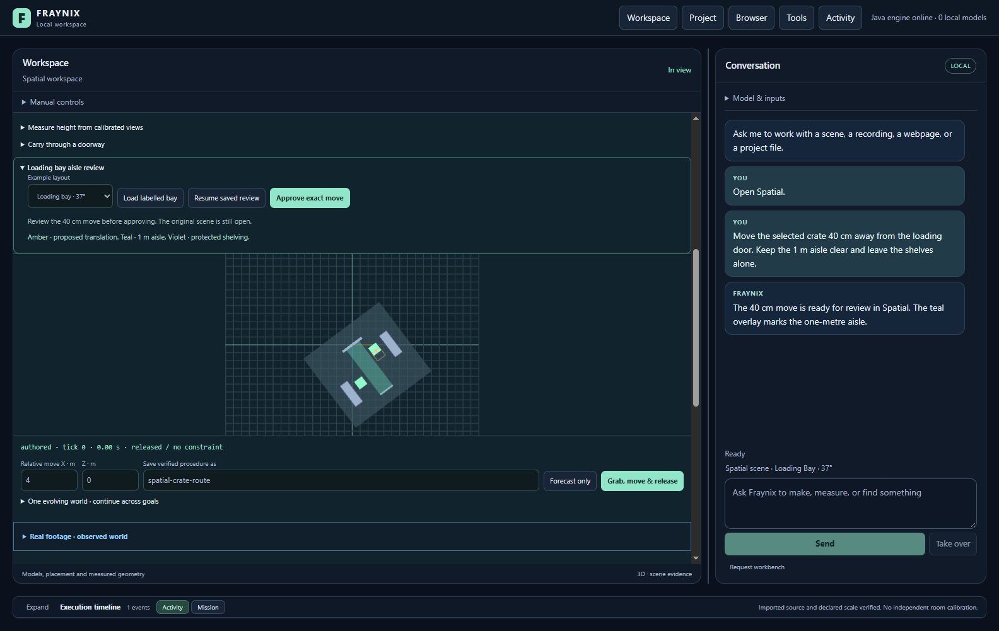
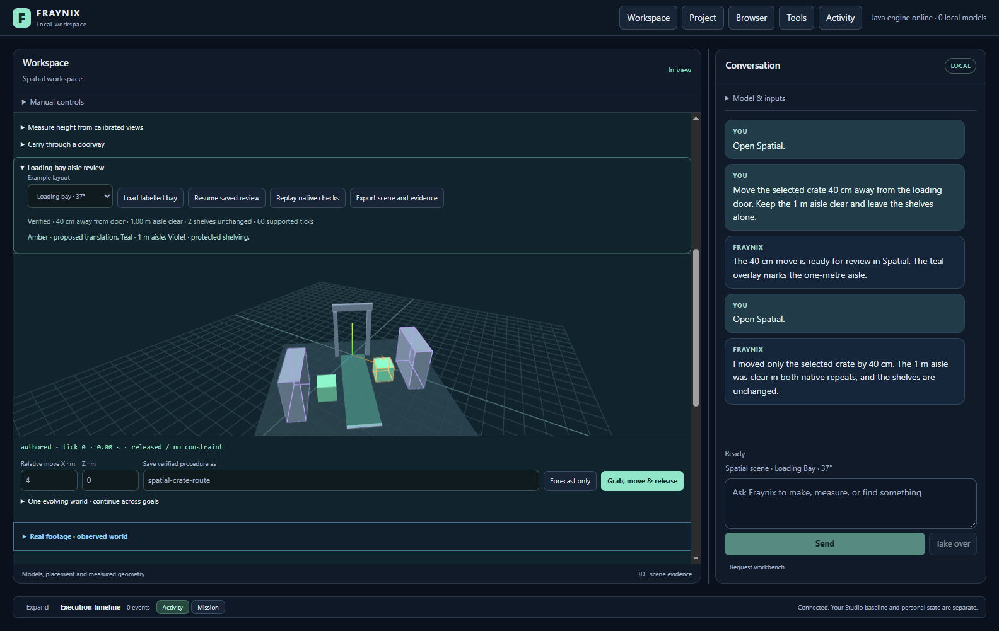
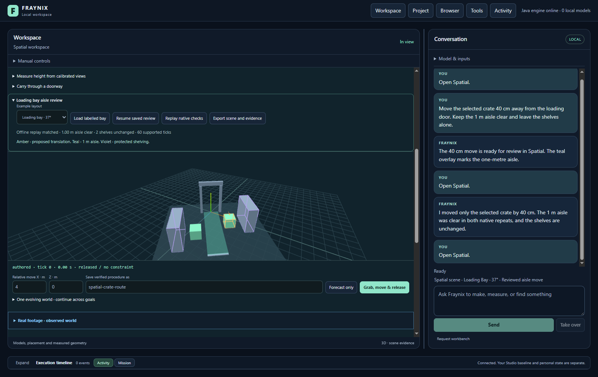

Move a crate and verify a clear loading aisle
Open Spatial and load the 37° bay. Select the crate, ask for the 40 cm move and review the aisle before approving.

The 37° bay and the exact crate move awaiting approval in Spatial

The approved move with the measured aisle and both protected shelves

Spatial reproduces the verification after a second offline restart
System files
Open source